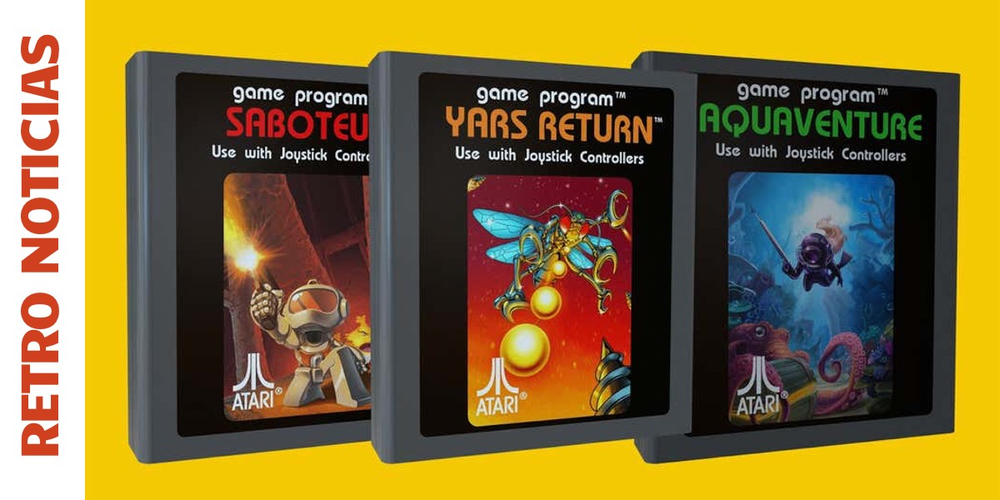

Els cartutxos van ser el format físic predominant durant les dècades dels 70, 80 i 90.
Permetien inserir fàcilment nous jocs i van marcar una generació amb el seu disseny robust
i etiquetes acolorides. L’Atari 2600 va popularitzar el sistema, mentre que Nintendo el va
perfeccionar amb la NES i la Super Nintendo, convertint-lo en un estàndard mundial.
A l’interior d’un cartutx hi havia molt més que un simple xip ROM.
Alguns models incorporaven coprocesadors especials que ampliaven la potència de la consola.
Exemples destacats inclouen el SuperFX (Star Fox), que permetia gràfics 3D primitius,
o el SA-1 (Mario RPG), que accelerava càlculs i millorava el rendiment general.
Avui dia, els cartutxos retro són peces molt valorades entre col·leccionistes.
Els exemplars rars, especialment els que conserven caixa i manual originals,
poden assolir preus molt elevats. La seva durabilitat i el seu valor històric
els converteixen en objectes de culte.
Història dels cartutxos
Els cartutxos van ser el format físic predominant durant les dècades dels 70, 80 i 90.
Permetien als jugadors inserir fàcilment nous títols a les consoles, i van marcar una
generació amb el seu disseny robust i les seves etiquetes acolorides.
L’Atari 2600 va popularitzar el sistema, i més tard Nintendo amb la NES i la SNES va
perfeccionar el format. Els cartutxos no només contenien el joc, sinó que sovint
incorporaven xips especials per millorar el rendiment i ampliar les capacitats de la consola.
Exemples icònics

Atari 2600 — pioner del format.NES — Super Mario Bros.SNES — The Legend of Zelda.